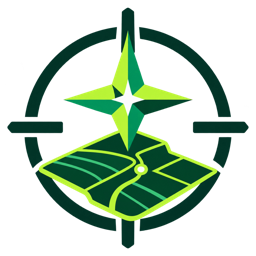

AstroTrack
Levantamientos GNSS desde tu celular
Mide tu terreno con el GPS de tu teléfono.
Descargar para AndroidQué hace
- Marca puntos sobre el mapa satelital en tiempo real.
- Coordenadas UTM, con zona automática o fija (por ejemplo 17S), y cota sobre el nivel del mar.
- Promedia varias lecturas por punto y avisa si la precisión no alcanza.
- Área y perímetro de polígonos.
- Exporta DXF para AutoCAD y CSV para Excel o Civil 3D.
- Informe en PDF con croquis y tabla de coordenadas.
Cómo instalarla
- Toca Descargar para Android desde el celular.
- Abre el archivo descargado. Android pedirá permiso para instalar apps de fuentes desconocidas: acéptalo solo para este archivo.
- Si aparece Play Protect, elige Instalar de todos modos.
- Al abrirla, permite la ubicación para que funcione el GPS.
Si ya la tienes instalada, la nueva versión se instala encima y conserva tus puntos.
Importante
La precisión depende del GPS de cada teléfono, normalmente entre 1 y 5 m. AstroTrack sirve para trabajos referenciales y no reemplaza un levantamiento con estación total o GNSS diferencial. La versión gratuita muestra anuncios.